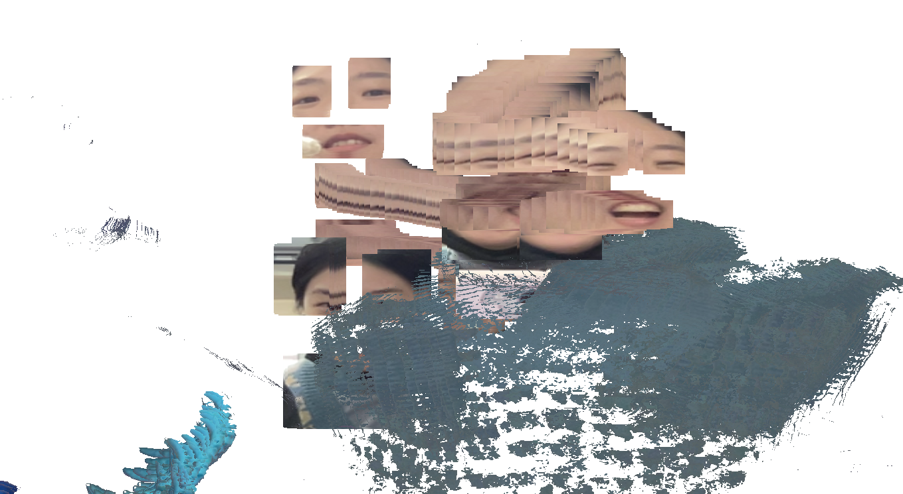
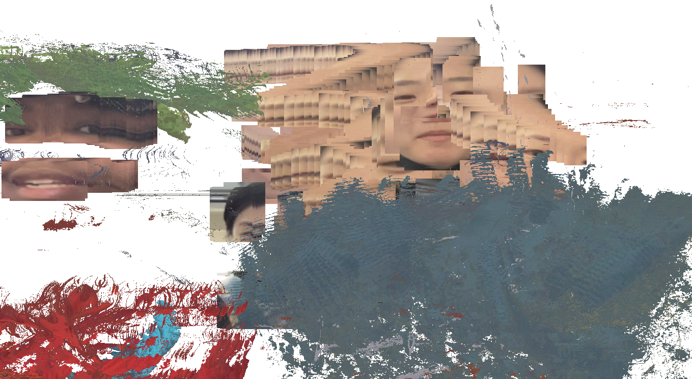
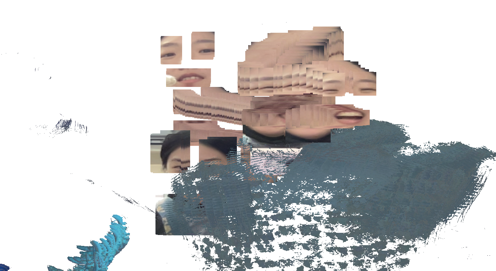
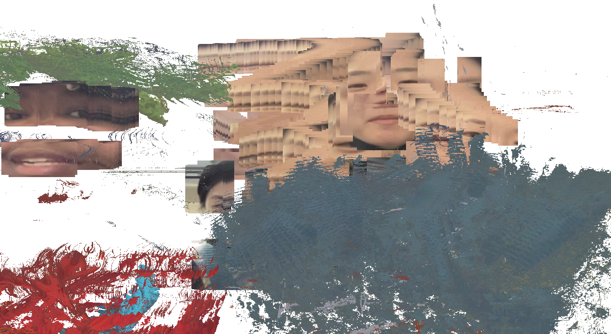

Experimental Camera
2021
Playing with the webcam and clmtrackr to make an experimental camera in response to life in quarantine and school over Zoom.
This project allows the user to draw on the canvas with different colored objects in front of the camera and even with their own face.
The camera works best on desktop and in a separate tab.
link to camera →
link to code →
 



Documentation
I started off knowing I wanted to do something with the color pixels. One of the things I associate with "the camera" and photography is color. And since the webcamera information is in pixels, I thought that would be fun to play with.
I also wanted to focus on the facial features because I think that these are the parts of the face that basically communicate everything. You can consider the rest of the face less necessary. And since I've been staring at my face all day on Zoom, I've become super self conscious, so why not just get rid of everything unnecessary on my face and just replace it with something more interesting. Not exactly sure what I wanted to be doing with the color pixels, I decided on letting the user have control over that. And so my project would be isolating the different color categories and allowing the user to draw on the screen with that.


The biggest component of this project was being able have pixels in certain color ranges grouped together as one color, and to draw those pixels on the canvas.
I started off with testing just red and blue and found that, since color information on a screen is divided into R, G, & B channels, it was actually quite difficult to separate colors cleanly. The camera doesn't register and recognize color the way humans do, so lighting, especially low lighting, affected the registering of colors.

To add my face to the sketch, I separated the color drawing layer and the face layer with createGraphics(). My initial idea was to keep the face above the layer of color pixels being drawn, but I wasn't able to work out a simple solution, so the colors are drawn above the face. But because of this problem I thought of adding the face as one of the drawing options, so you could actually see the face if you wanted over the colors. And that worked out really nice.
Working with clmtrackr, I took the points from the corners of the mouth and the corners of the eyes to draw rectangles around them as the area to show on the canvas. I initially had circles but rectangles were more flexible. I removed the nose and added the eyebrows because I thought the eyebrows were much more crucial to facial expression and communication than the nose.
I excluded black and white and brown because of lighting as well and to allow the other 7 colors a bigger range. Multiple colors can be selected at once and drawn on the canvas, and the image can be downloaded at the end if so wished.
References
I used clmtrackr, a javascript library, to track points on the face, and p5.js to draw everything on the html canvas.
I was inspired by this sketch and other examples from P.4:Image of the book Generative Design by Benedikt Gross, Claudius Lazzeroni, Hartmut Bohnacker and Julia Laub.
Some faces show in images courtesy of my friends!!